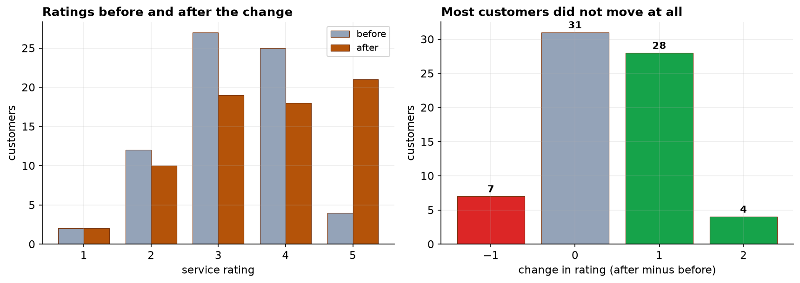
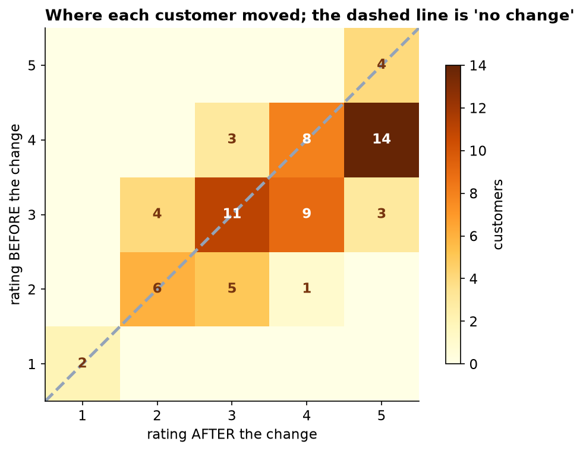

Ratings Went Up, and Four in Ten Customers Did Not Notice
A real improvement after the booking change, with an honest account of how many people it reached.
Recommendation
Ratings improved, and the improvement is not something chance would produce (p < 0.001, n = 70). The number worth quoting is the top-two-box share: customers rating us 4 or 5 went from 41% to 56%. Alongside it, please carry the other half of the picture: 44% of customers gave exactly the same rating as before, and 10% rated us lower.
What we found
70 customers rated the service on a 1-to-5 scale before the booking change and again afterwards. 32 rated it higher, 31 did not change their answer at all, and 7 rated it lower. The median rating moved from 3 to 4, which is one step on a five-step scale.

Why the unchanged group belongs in the summary
Nearly half the sample sat still. That is not a failure of the survey; it is what a 5-point scale does, since a customer has to feel a fairly large shift before they move a whole point. But it does mean a headline like "ratings improved after the change" describes what happened to slightly under half our customers. The honest version names all three groups.

Suggested wording
Something like: after the booking change, the share of customers rating us 4 or 5 rose from 41 percent to 56 percent. Around 46 percent rated us higher than before, 44 percent gave the same rating, and 10 percent rated us lower. That is accurate, and it does not invite anyone to imagine the change reached everybody.
What we cannot say
- We cannot say the booking change caused it. There was no comparison group of customers who kept the old process. Seasonality, a staffing change, or simply being asked twice could all move ratings in the same direction. If this matters for the next decision, the next rollout should go to part of the customer base first.
- Three customers never answered the second survey and had to be dropped. People who stop replying tend to be the ones who have stopped caring, so the figures here are, if anything, a little flattering.
- We should not report an average rating. A 5-point scale tells us the order of customers' opinions, not the distance between them, so an average of 3.66 is a number without a meaning. Share-at-each-level is the honest summary.
- Nothing here says how much the improvement is worth. The result is statistically clear and practically modest, and only the operations side can weigh that against what the change cost.